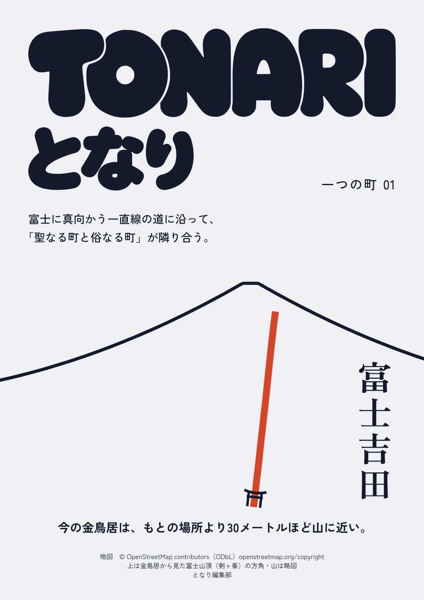
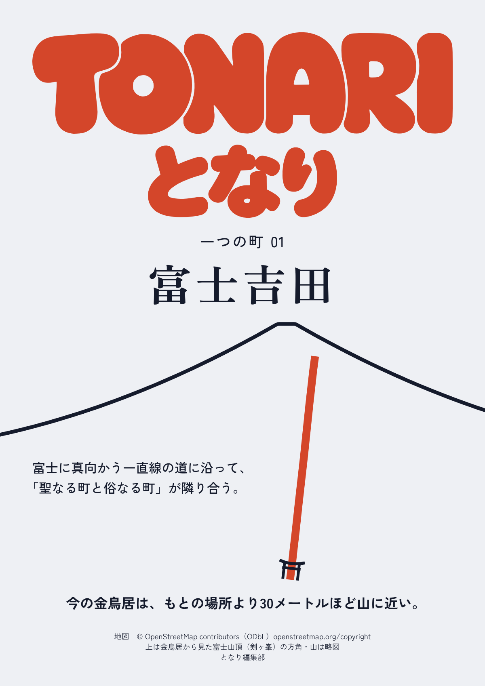
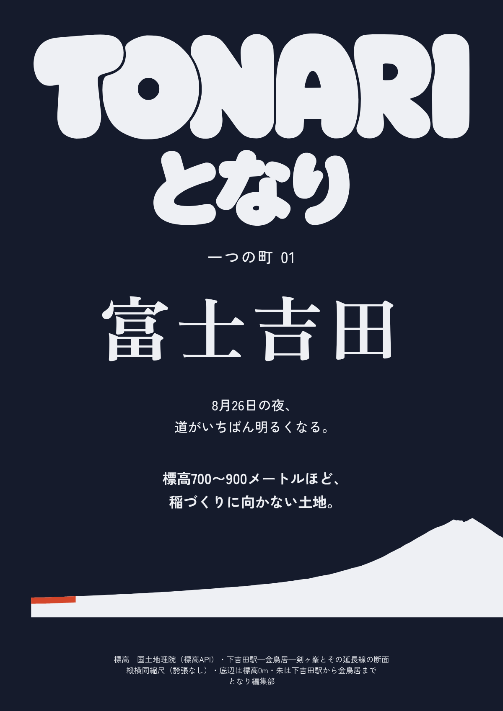
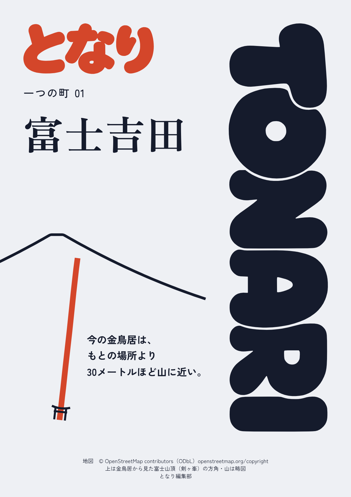

『となり』 一つの町 01 富士吉田 — 새 마크 표지 4안
마크 = 오너 수렴안 정밀화 v1. 문구·지도·단면은 12-hip(검수 완료) 그대로. 2026-10-16 KST.

A 一本の線 — 능선 아래 비탈에 세로 제목. 조합판은 왼쪽 정렬(시안 01·05)check-cover 통과
B 朱の名 — 가운데 축·좌우 같은 여백. 주홍 조합판이 주인공, 지도선과 같은 주홍check-cover 통과
C 断面 — 밤 바탕에 흰 조합판. 바닥은 실측 단면(縦横同縮尺)check-cover 통과
D 背 — 세로 TONARI가 오른쪽을 통째로(시안 08). 책등·선반에서도 읽힌다check-cover 통과